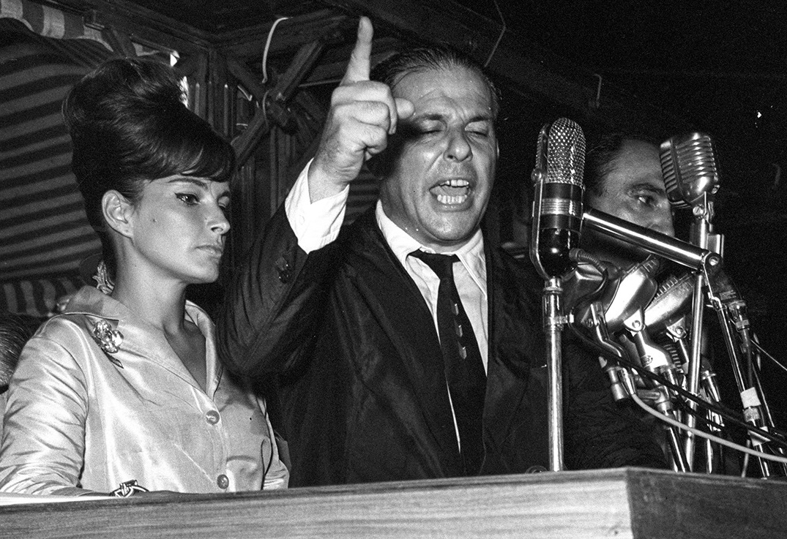
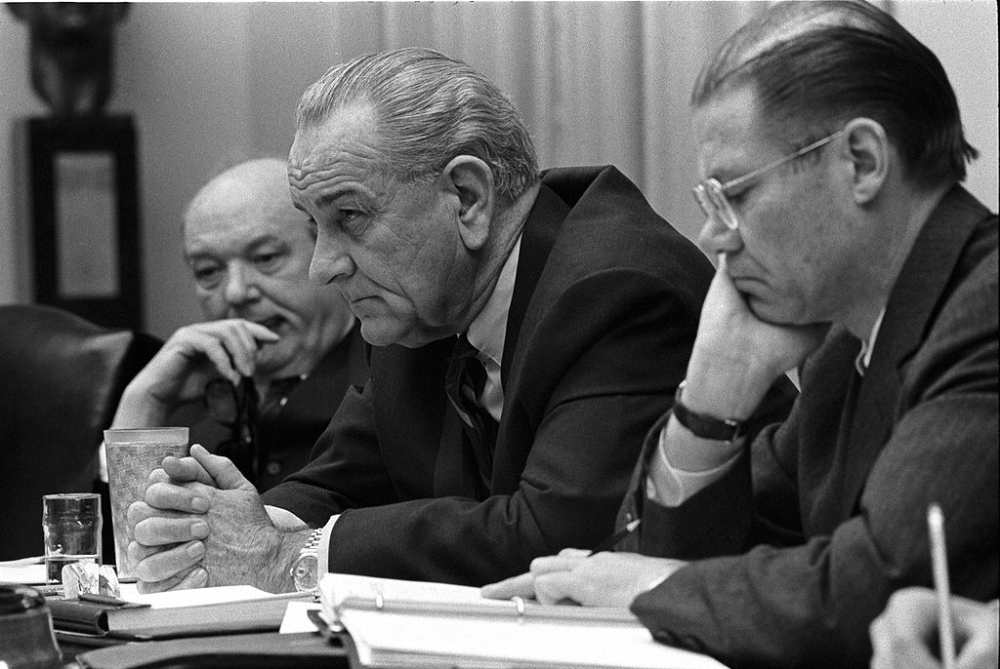
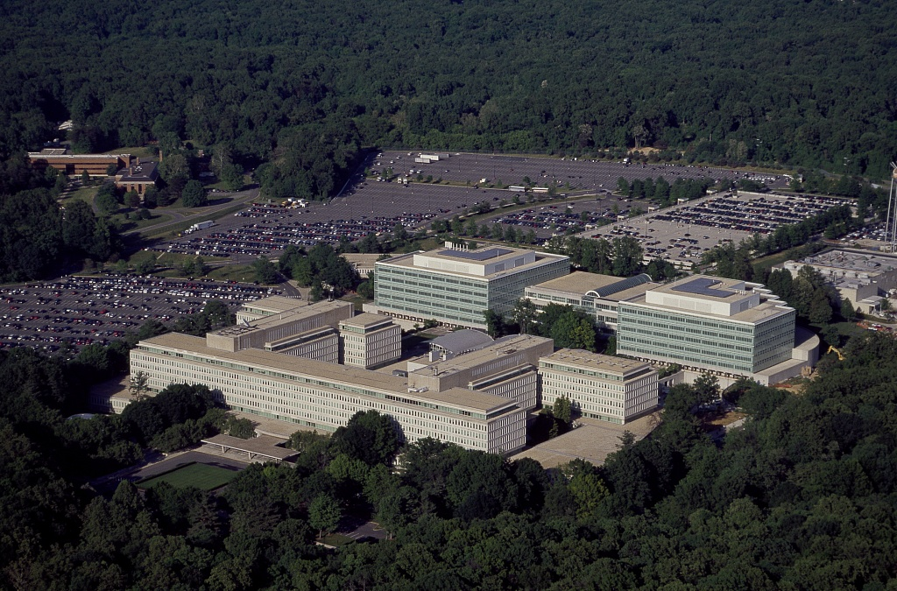

Sobre o projeto
Este site nasceu como um projeto de extensão da disciplina História das Relações Internacionais, Cultura e Extensão, do Instituto de Relações Internacionais da Universidade de São Paulo (IRI-USP).
Nosso objetivo é tornar mais acessíveis documentos históricos produzidos pelo governo dos Estados Unidos sobre o golpe de 1964 e a ditadura militar brasileira.
Reunimos e contextualizamos telegramas, memorandos e relatórios oficiais que ajudam a compreender como os Estados Unidos acompanharam, interpretaram e atuaram antes, durante e após o golpe que deu início à ditadura militar no Brasil.
Ao longo do site, você encontrará uma seleção organizada de forma cronológica, acompanhada de explicações, contexto histórico e análises que facilitam a compreensão.
Nosso foco é mostrar, a partir de fontes primárias, como se desenvolveu a participação norte-americana nesse processo e quais foram seus desdobramentos.
Seja você estudante, professor(a), pesquisador(a) ou apenas alguém interessado em conhecer melhor esse período da história brasileira, esperamos que este espaço sirva como um ponto de partida para explorar os documentos e refletir sobre um dos momentos mais importantes da história política do Brasil.

Por onde começar
Sugerimos começar pela Cronologia, que situa os eventos entre 13 de março e 2 de abril de 1964. Em seguida, os Telegramas trazem os 12 documentos com ficha técnica e análise. A seção Envolvidos apresenta os perfis das pessoas que aparecem nos registros.
